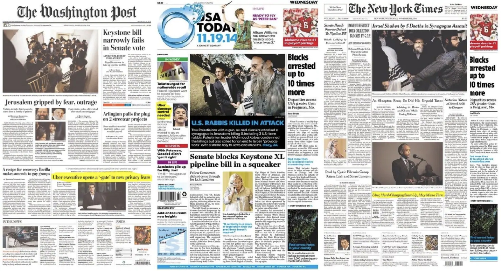

Summary
Google puts a lot of works to fight against misinformation and doctored contents on the internet. As a part of its various efforts, Google Search is working on projects to help online news readers evaluate any newsy information they consume on the internet by providing rich contextual information.
Project 1. Reframing Google Search Results
Being inspried by traditional newspapers, News UX team is making an organic design framework to reframe Google Search Results. Using Google AI, Google Search will provide contextualized search results for any newsy queries, so readers can have a better story understanding on the topic more quickly and easily.
I conducted iterative usability testing to see how people perceive, interpret, and digest information given on new designs.

Project 2. Fact checking
Google is developing a cross-functional fact checking feature, which can be integrated into various Google products having direct touchpoints with end users. This feature will be pre-announced at 2019 Google I/O.
As a main UX Researcher for the project, My responsibility covers identifying research topics, prioritizing research needs, and executing researches in various settings.
Project 1. Reframing Google Search Results
Being inspried by traditional newspapers, News UX team is making an organic design framework to reframe Google Search Results. Using Google AI, Google Search will provide contextualized search results for any newsy queries, so readers can have a better story understanding on the topic more quickly and easily.
I conducted iterative usability testing to see how people perceive, interpret, and digest information given on new designs.
Project 2. Fact checking
Google is developing a cross-functional fact checking feature, which can be integrated into various Google products having direct touchpoints with end users. This feature will be pre-announced at 2019 Google I/O.
As a main UX Researcher for the project, My responsibility covers identifying research topics, prioritizing research needs, and executing researches in various settings.
Methods
- Qualitative: in-lab user interview, diary study
- Quantitative: survey at scale